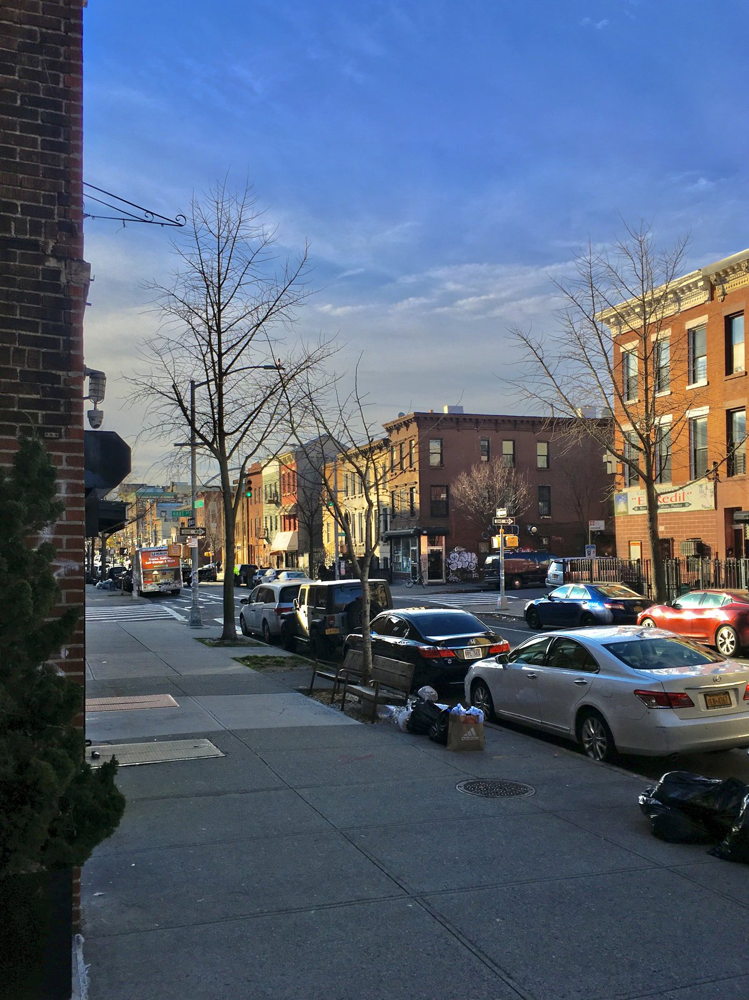
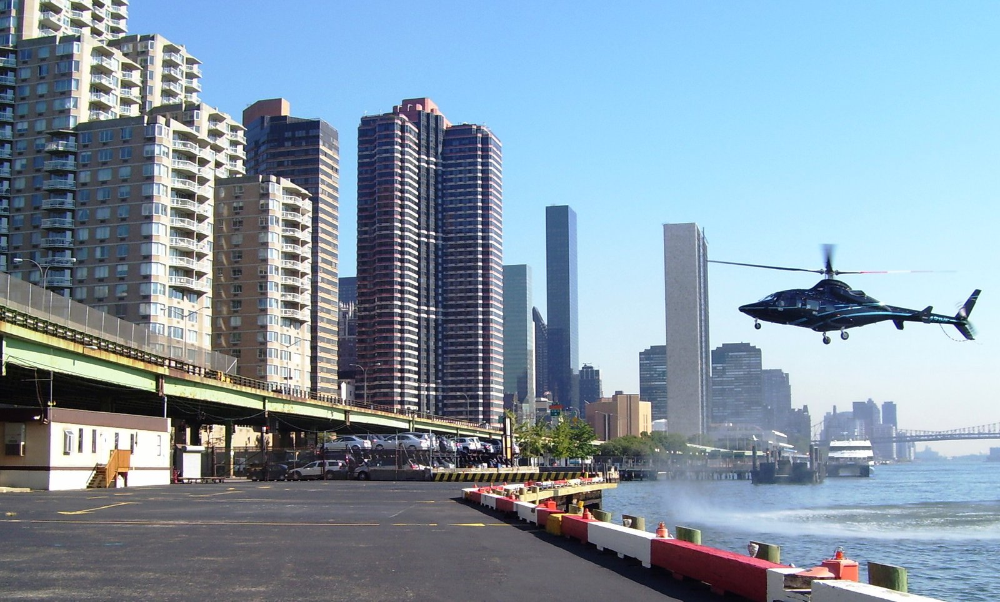
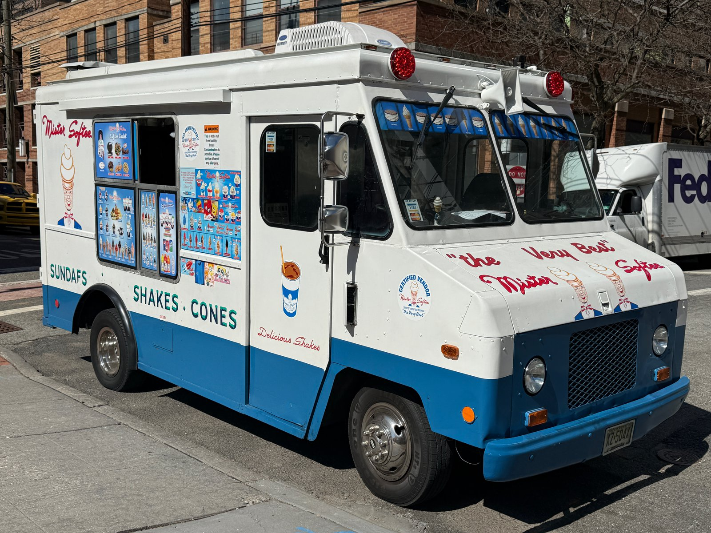

Twenty years of noise
The first call ever placed to New York City's 311 hotline, at 12:01 AM on March 9, 2003, was a noise complaint from Jackson Heights, Queens. Twenty-one years later, in the calendar window this dataset covers, New Yorkers filed a noise complaint with 311 about every 44 seconds.
Across 2023 and 2024 the city logged 1,439,558 noise-related service requests — 686,283 in 2023 and 753,275 in 2024, a 9.8% year-over-year jump. That's the canonical count for every complaint type whose name includes "Noise." Press coverage in early 2025 reported a 19% jump; the discrepancy comes from how each outlet drew its filter on the same underlying NYC Open Data table.
The typical day in 2023–2024 brought 1,684 noise complaints into 311. The quietest day was a January Monday (830 complaints, 2023-01-23). The loudest day, by a margin no other day comes close to, was a Sunday in September 2024 — 8,820 complaints in 24 hours. We'll come back to where most of them came from.
What we're actually complaining about
One complaint_type dwarfs every other: Noise – Residential, at 47.1% of all filings (677,749). Add Street/Sidewalk noise (21.6%) and Commercial (9.5%) and you've covered four out of every five complaints. Helicopter is sixth at 6.1%, Vehicle fifth at 6.9%, and a thin wedge of Park (1.2%) and House of Worship (0.18%) make up the rest.
"Loud Music/Party" is 54.02% of every noise filing in NYC. That's not just a Residential thing — Loud Music/Party is 80.5% of Commercial complaints, 79.1% of Street/Sidewalk complaints, and 60.0% of Residential complaints. Banging/Pounding is a distant second at 15.5%, Loud Talking third at 8.9%. Construction descriptors (Before/After Hours; Equipment; Jack Hammering) together hit about 4.6%, and ice cream truck jingles, despite the lore, are 0.19% — barely a rounding error.
The very first row in the raw file (case 56416252, 2023-01-01 12:00 AM, Sedgwick Avenue in the Bronx) is "Noise - Residential / Loud Music/Party," routed to NYPD, closed 17 hours later. That triage logic — your descriptor decides which agency owns the call, and that decides whether anyone shows up the same night or a month later — is the whole story.

Three agencies, three speeds
Every noise call lands in one of three agencies. NYPD takes 86.4% (1,243,510 complaints) — everything Residential, Street/Sidewalk, Commercial, Vehicle, Park, and House of Worship. DEP takes 7.5% (108,234) — the construction-noise bucket. EDC, the city's Economic Development Corporation, which owns the heliports, takes every single Helicopter complaint, 6.1% (87,813). That handoff is not a triviality — it determines how fast anyone responds, and what the file says when it closes.
NYPD's median close time on a noise complaint is 41 minutes (0.68 hours). DEP's is 2.85 days (68 hours). EDC's median is 35 days (843 hours) — and its 90th percentile is 114 days. The three agencies operate on three different scales of time. None of them issue many violations: across the entire dataset, only 0.65% of complaints (9,340 out of 1.44 million) end with a summons or violation issued.
How the call gets made
The famous citywide 311 statistic — 68% of inquiries by phone, 28% by web, 3% by app — does not describe what New Yorkers do when they want to report noise. For noise complaints specifically, 60.78% come in through the 311 website, 26.76% through the NYC311 mobile app, and just 12.46% by phone. When a New Yorker decides to do something about the music upstairs, they type rather than dial.
Year-over-year that mix is moving in a counter-intuitive direction. Online complaints' share fell 15 percentage points (68.8% → 53.5%); mobile app rose 8 pp; phone calls rose 7 pp. In raw numbers, phone complaints more than doubled, 59,216 in 2023 to 120,104 in 2024. The web is losing share to both the app and the voice call — a result that contradicts the easy "everything is moving to the app" story you might expect.
Geography — who files
By raw count Manhattan files the most (26.9%), Brooklyn second (26.2%), Bronx third (24.7%). Scaled by population the order flips dramatically: the Bronx logs 241 noise complaints per 1,000 residents over two years, Manhattan 229, Brooklyn 138, Queens 120, and Staten Island just 63 — Staten Islanders complain less than a quarter as much as Bronx residents do, per person. That matches recent press: TimeOut named the Bronx as NYC's loudest borough in 2025 using the same per-capita measure.
ZIP-level data tells the same story, sharper. The Bronx takes the #1 spot (10466), the #3 spot (10456), and ten of the top 25 ZIPs by raw complaint count. Manhattan claims #2 (10023 — Upper West Side / Lincoln Center), #4 (10031 — Hamilton Heights), and #12 (10025 — Upper West Side), nine of the top 25 overall. Brooklyn has five, Queens two.
One caveat the data forces on every reader: 311 measures who complains, not where noise actually is. The classic 2016 study by Joscha Legewie of NYU and Merlin Schaeffer found that 311 complaints peak along "fuzzy" ethnic boundaries — transitional blocks between two more homogeneous communities — rather than at sharp ones. Subsequent journalism documented that per-capita 311 calls grow up to 70% faster in gentrifying NYC neighborhoods than the city average. None of those papers had access to the next finding.
One Bronx ZIP
ZIP 10466 (Wakefield / Williamsbridge in the north Bronx) accounts for 8.97% of every noise complaint filed in NYC in 2024. A single ZIP code with roughly 62,000 residents — about 0.7% of the city's population — is responsible for nearly a tenth of the citywide noise feed. Across the two years it logged 76,380 complaints, more than 2× the second-place ZIP. Within 2024 alone its complaint volume jumped from 8,809 to 67,571 — a 7.67× year-over-year increase. 93.4% of those complaints are tagged "Loud Music/Party."
The pattern of those complaints is not the steady drip you'd expect from a chronically noisy neighborhood. It's a series of avalanches. On Sunday, 2024-09-15, ZIP 10466 filed 4,952 complaints in 24 hours — one every 17.4 seconds, all day, every hour. 4,933 of those (99.6%) came in through the NYC311 mobile app; only 13 through the website, and 6 by phone. Eight separate days in 2024 saw 3,000+ complaints from this single ZIP, all with the same channel signature — a giant mobile-app burst, a small handful of web and phone.
The median day in 10466 is 12 complaints. Its worst day is 412× that. This is not a neighborhood getting noisier — it's a small number of people (or a single very dedicated person) hammering the mobile app's "Submit" button hundreds of times a day, or an organized civic campaign, or both. The dataset can't tell us which, because 311 doesn't record who filed.
Hear ZIP 10466's year
Each of 366 days of 2024 is a 45 ms FM-bell tone. Pitch and loudness scale with that day's complaint count. Most days are nearly silent (median = 12); the eight ≥3,000-complaint bursts arrive like percussive slams. The bar that pulses red is the day currently being heard.
The helicopter surprise
Press coverage in 2024 emphasized that helicopter noise complaints had "exploded" — the NYC Council's own data team had tallied 59,127 helicopter-noise complaints in 2023, up from 811 in January 2020 alone. The data on what came next is the opposite of the trend line. Helicopter complaints fell from 59,127 in 2023 to 28,686 in 2024 — a 51.5% drop, the largest year-over-year decline of any complaint_type in the dataset. Eleven of twelve months in 2024 were down year-over-year, often by half: May fell 7,461 → 2,833; December fell 8,724 → 2,843.
Geographically the helicopter complaints stay where they always were: 57.8% Manhattan, 23.9% Queens, 16.8% Brooklyn, the Bronx and Staten Island under 1% combined. ZIP 10023 — Upper West Side / Lincoln Center — alone accounts for 31% of every helicopter complaint citywide. ZIP 11414 in Howard Beach Queens, in the JFK approach corridor, is second at 16,646. The hotspot list still matches the City Council's flight-path map: Manhattan along the Hudson and East River, Brooklyn from Carroll Gardens to Park Slope, Queens at the airports.
Why the 2024 drop? The dataset alone cannot answer. Public attention waned after the 2023 spike; the 2025 Helicopter Oversight Act (which doesn't take effect until 2029) had not yet passed; weather and flight volumes shift year to year. What we can say: the 2023 number that motivated the City Council's bill was a real peak, not a baseline.

Sunday at 11 PM
Of every seven days, two of them — Saturday and Sunday — carry 40.75% of the city's noise complaints. Sunday alone is 21.13%, Saturday 19.62%, Friday a clear third at 13.58%. The weekend wave starts Friday evening and crests Sunday, when the previous night's parties are reported alongside that day's brunch noise.
Across the 24 hours, 10 PM and 11 PM are the city's loudest hours — 154,924 and 149,816 complaints over two years, respectively. On weekend nights (Fri + Sat) the 11 PM rate is 1.95× the weekday rate (314 vs 161 per night), and the 10 PM rate is 1.62×. The 5 AM trough is the quietest single hour, with 22,446 complaints across two years.
Monthly, complaints climb with the temperature: February is the quiet trough; May 2023 was the busy peak (75K); 2024 inverts this with September at the year-high (88K), driven almost entirely by the 10466 surge described above. Late June into early July shows the fireworks pulse: 4,150 complaints on 2023-06-25, 3,607 on July 4, 2023. In 2024 the late-June spike spread out (2,974–3,470 across June 22–29), and the July 4 reading was 3,252 — clearly elevated, but no longer a single dramatic spike.
What the city does about it
When an NYPD officer is dispatched on a Residential noise call, here is what happens: 39.97% of cases (270,918) close with the phrase "observed no evidence of the violation." 46.46% close as "responded — took action or action not necessary." 8.42% close as "nobody home / no entry." Only 1,891 of 677,749 residential noise complaints — 0.28% — close with a summons or violation issued. Three of every thousand NYPD residential noise calls result in a documented violation. The 41-minute median response time is the city's promise; the 0.28% citation rate is the city's delivery.
Aggregating across every complaint type and agency, only 0.65% of all complaints (9,340) ever produce a summons or violation. 33.13% close with "no evidence." 1.85% are flagged as duplicates of a prior complaint.
The ice cream truck case is a perfect miniature. The 1970s deal — Mr. Softee may play its jingle while the truck is moving, but not while parked — carries fines from $350 to $3,000. The dataset has 2,805 ice cream truck complaints over two years, all routed to DEP. Of those, 2,132 (76%) close with "DEP didn't observe a violation" and exactly 15 (0.53%) close with a violation issued. The complaint-to-citation ratio for ice cream truck noise is roughly 1 in 187. The law exists. The enforcement does not.

Year over year
The +9.8% citywide growth from 2023 to 2024 is essentially a Bronx phenomenon. The Bronx jumped 51.2% year over year (+72,303 complaints). Brooklyn grew 1.9%, Staten Island 6.3%, Manhattan fell 3.1%, and Queens fell 2.3%. The Bronx alone accounts for more than the entire citywide net increase — every other large borough except Brooklyn lost complaint volume.
By complaint type, the picture is opposite swings: Residential grew 27.1% (+80,843), Street/Sidewalk grew 10.5%, Commercial was flat, Vehicle fell 5%, and Helicopter fell 51.5%. The story of the year-over-year change is two-line: residential reporting via the mobile app surged, especially in the Bronx; helicopter reporting collapsed everywhere.
If you subtract ZIP 10466 entirely, the Bronx's growth shrinks from +51% to +9.5% — about the same as the citywide rate. The "noise epidemic" headline of 2024 is, in a literal sense, one ZIP code's headline. The NYPD's new Quality of Life Division ("Q-Teams"), which rolled out in April 2025 and reached every precinct by August, is the city's response — to a phenomenon the 2023–2024 data shows is highly concentrated rather than diffuse.
What the thermometer measures
On March 9, 2003, the first call to 311 was a noise complaint from Jackson Heights. By 2024 the system was logging 2,058 of them per day. Each one is one New Yorker formally telling the city that something is too loud — and the city, on average, dispatching an officer in 41 minutes who then writes "observed no evidence" and goes home.
The Q-Teams, the Helicopter Oversight Act, the headlines about a noise "epidemic" — all of them are looking at the thermometer. The data shows the thermometer is being held, on its hottest days, by one ZIP code in the Bronx tapping the mobile app's submit button every 17 seconds. 311 measures what it measures very faithfully. What it measures isn't always noise.